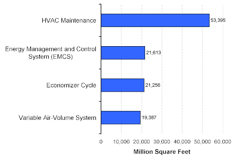
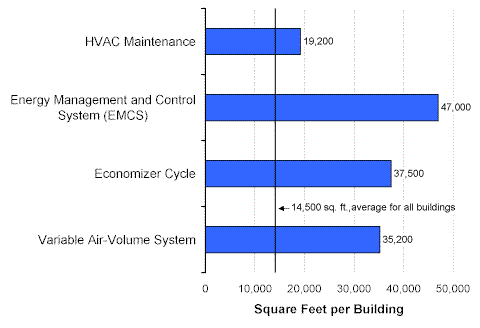

HVAC Conservation Features
Maintenance of HVAC equipment was practiced for 53.4 billion square feet of the total of 67.3 billion square feet of commercial floorspace (Figure 1). Three HVAC conservation features—energy management and control systems, systems with economizer cycles, and variable air-volume systems—were each used for about 20 billion square feet of floorspace.
Figure 1. HVAC Conservation Features in Commercial Buildings, 1999 Energy Information Administration
Commercial Buildings Energy Consumption Survey
Those commercial buildings that used HVAC conservation features were larger commercial buildings on average (Figure 2).
Figure 2. Average Building Size by Type of HVAC Conservation Features, 1999 Energy Information Administration
Commercial Buildings Energy Consumption Survey
Return to:
“Conservation Features and Practices”
Specific questions may be directed to:
Alan Swenson
alan.swenson@eia.doe.gov
Release date: May 21, 2002
http://www.eia.gov/consumption/commercial/data/archive/cbecs/char99/con_hvac.html
If you are having any technical problems with this site, please contact the EIA webmaster at wmaster@eia.doe.gov.